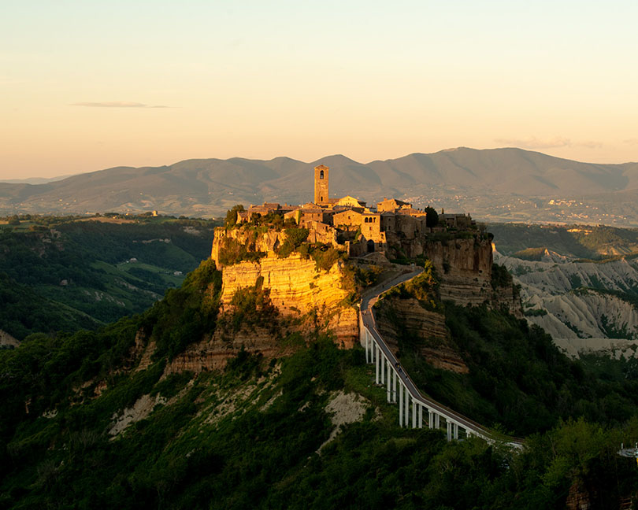
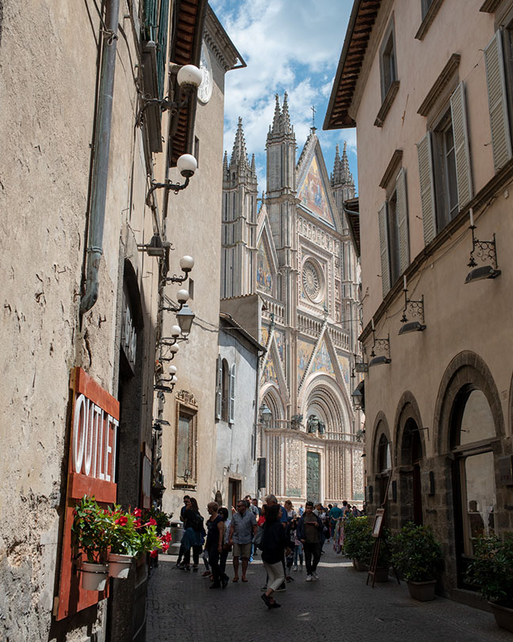

チヴィタ・ディ・バニョレージョとオルヴィエートはラツィオとウンブリア州境に位置し、ローマから100km程北、フィレンツェの160km程南に位置する。二つの町とも凝灰岩という火山灰が堆積されて形成された岩石の上にあり、紀元前にエトルリア人により作られ、中世に発展した歴史をもつ。
 チヴィタ・ディ・バニョレージョは浸食によってできた深い谷に360度囲まれた陸の孤島のように残った凝灰岩の上にある町。まさに天空の城という言葉がぴったりな景観。隣町へつながる唯一細い陸地も浸食が進むに伴い、町の人口も減り続け“死にゆく町”とも言われている。現在は橋がかかり唯一の連絡口になっている。
最大の見所は橋の手前にある展望台からの景観。断崖絶壁の上に立つまるでラピュタの世界を思わせるような天空の城はまさに絶景。夕方には島が赤く染まりはじめ、日が低くなるとともに徐々に周りの深い谷が暗くなっていき島だけが浮かび上がってくる。まさに身震いするほど美しかった。朝日の逆光の中、朝焼けの空を背景に町がシルエットとして浮かび上がる景色も素晴らしい。橋を渡って門をくぐり抜けると中世の趣を残した町に入る。町の端から端までで300mほどのごく小さな町。ロマネスク様式の飾らないサン・ドナト教会が印象的。
隣町のルブリアーノからは崖越しにチヴィタの町が見えるので、オルヴィエートに行く前に寄ってみた。日曜だったこともありお祭りをやっていた。教会に連なる道に花びらを敷き詰めて絵を描いている。インフィオラータという祭りらしくイタリア各地で6月に行われるらしい。たまたま祭りの日にこの町に来られて本当に幸運だった。あまりの感動にチヴィタの崖越しの写真撮り忘れそうになったぐらい。
 オルヴィエートは巨大な凝灰岩の上にそびえ立つ町。切り立つ崖に360度囲まれ自然の城壁になっている。東西に1.5kmの長さがあり、崖の下の町までの高低差は200ｍもある大きさである。
最大の見どころは大聖堂。イタリアで最も美しい大聖堂とも言われている。ロマネスク様式とゴシック様式の両方の特徴を併せ持っている。正面のファザードのモザイク画には金箔が張り付けられており、太陽の光で輝くのが美しい。側面のボーダー柄も特徴的である。
町の地下には迷路のように入り組んだ洞窟があり、エトルリア人たちが掘った井戸、中世のオリーブ油製造所、ハト飼育小屋などを見ることができる。
お昼にウンブリケッリというパスタを食べたのだが、シエナのピチとほぼ同じでコシのあるうどんのような太い麺。アシャーノのピチについでの美味しさだった。
駐車場は丘の東側にある新市街のケーブルカー乗り場の近くにもあるが、駐車スペースは少ない。旧市街の観光には丘の西側の大きなな駐車場がありここの方が便利。ここからはエスカレータやエレベータで旧市街に行ける。
オルヴィエートを町の壮大さは町の外から見るのが一番。町から南西方向にSR71を行くと、ガベッレッタという町を過ぎるあたりから坂を登り始める。このあたりの道沿いに車を停めるとオルヴィエートを町を見渡せる。
ホテルはオルヴィエートから西に5kmほど離れたワイナリーに併設のアグリ・ツーリスモに泊まった。オルヴィエートの町をぶどう畑越しに見ることができる見事な景観。夕日に染まるオルヴィエートは特に美しかった。
- 一日目: オルチャ渓谷からチヴィタ・ディ・バニョレージョに午後到着。
- 二日目: オリビエートを観光し、近郊のオルヴィエートが見える町に泊。
- 三日目: 次の目的地、トスカーナの南部マレンマ地方の小さな町へ
| 長さ | 高さ | |
|---|---|---|
| オルヴィエート | 1500m | 200m |
| モンテプルチアーノ | 1200m | 110m |
| ピティリアーノ | 700m | 100m |
| モンタルチーノ | 700m | 100m |
| ソラーノ | 400m | |
| チヴィタ | 300m | |
| モンテメラーノ | 300m |